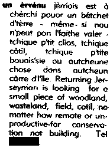

Un Èrvénu Jèrriais

un èrvénu jèrriais est à chèrchi pouor un bêtchet d'tèrre - même si nou n'peut pon l'faithe valer - tchique p'tit clios, tchique côtil, tchique p'tite bouais'sie ou autcheune chose dans autcheun cârre d'l'île.
JEP 2/9/2000
Viyiz étout:
Appel aux Fermiers et Proprietaithes
Au s'cours